苔庭之战 · 资产与接入
以原作资产为起点，目标图 → Blender 候选 → Godot 战场 → 游玩验收。各阶段单独记录。
战斗验证已有一轮闭环，新版继续修正原规则与实景。最新实景：重甲首人落地后即可按原规则反击，鲲不再等全员出舱才吞噬；新运兵舱门与全坡道已有实际出入。性能恢复原实例绘制后，开始镜头绘制调用减少约10.8%，并非FPS结论。下方r35为已通过完整一轮的证据。
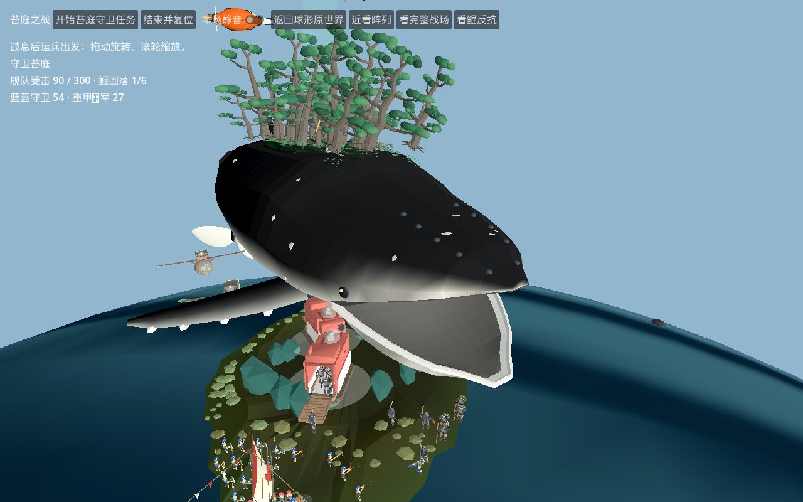
r34 Godot真实鲸吞 · 原海面与战场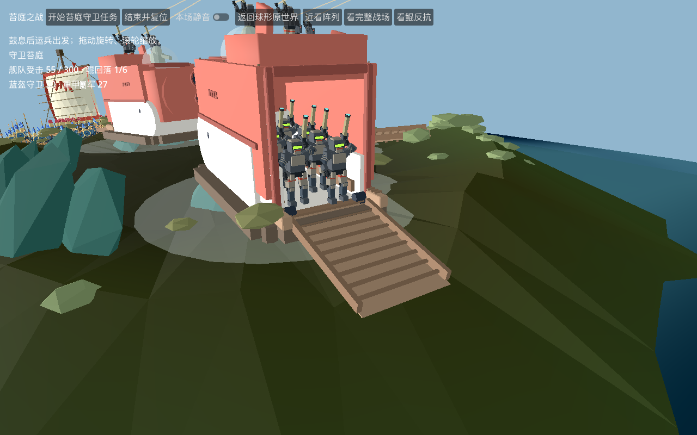
r30 Godot真实运兵舱与坡道r35 干地与鲲主动反击的固定步长验证记录：真实航行靠岸、305 次几何命中、六档吸力削弱、14 次真实吞入及 14 次对应吐出、撤军结束与重置。鲲后撤并转向敌群，保留原范围与前向判定。仅机队实际受击才请求重甲投放；未注入命中或登陆事件。此记录不等于完整视觉或音频验收。
读取战斗证据 · 完整参战资产及规则清单 · 三兵种多视角与动作
继续修复：海面与鲲引擎颜色已恢复；原地形面朝向已修，干地列阵和新重甲、飞艇、护航艇已参与一轮战斗。继续运兵舱出入、鲲口腔、战船与完整步态。三条原曲实际音频总线抽样已通过，全曲听验仍待完成。原电车轨道距登陆点约 95 米，超过原补兵 42 米门槛，尚未接通。
本轮更新 · 树根承托、战船划桨与绘制开销
25棵树的原局部位置不变，岛缘连续扩展35.084平方米，425个根盘采样均有支撑。待机整体提高约0.553米，实际顶面高于最大波峰约5.15厘米。尚未新增玩家导航或动态碰撞，本轮没有重跑整场战斗。
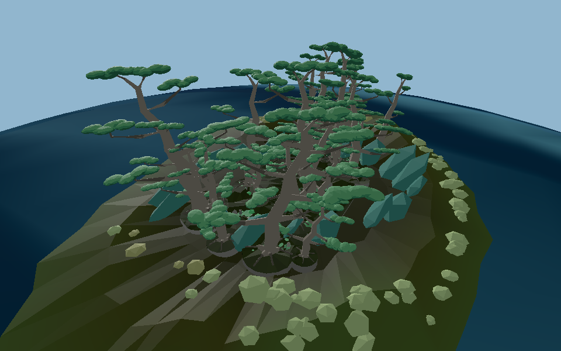
Godot实际近景 · 地面过渡仍待美术细化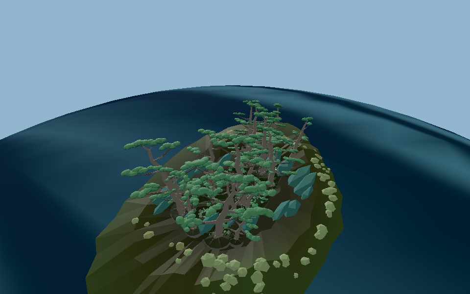
Godot实际远景 · 保留25棵原布局战船v2保留原26桨手与网格，调整划桨时序后301保存帧相邻桨碰撞为0。尚未正式回接战场，25人登陆调度待接。
原电车和城堡2602个同材质盒体表面已合并绘制，位置、UV和拓扑保持。独立电车GPU对照由372降至97次绘制，画面最大误差1/255；这不是整场FPS结果。
战船v2多视角 · 树根承托检查 · 同材质绘制检查
罗马三兵种 · 红蓝六组
脸型、装备与握持候选完成；六组独立结构和保存动作检查通过。蓝兵进入苔庭战斗候选；尚待连续游玩验收。
 目标参考图
目标参考图 实际模型记录 · 请结合上方状态阅读
实际模型记录 · 请结合上方状态阅读鲲 · 背岛与鲸吞
鲲v2已修真实内壁、收窄喉道和内部横杆；121姿态无内外表面交叉。已在Godot海面上的真实吞噬场面出现，保留原背岛/六庭。完整巡航结束与重置继续验证。
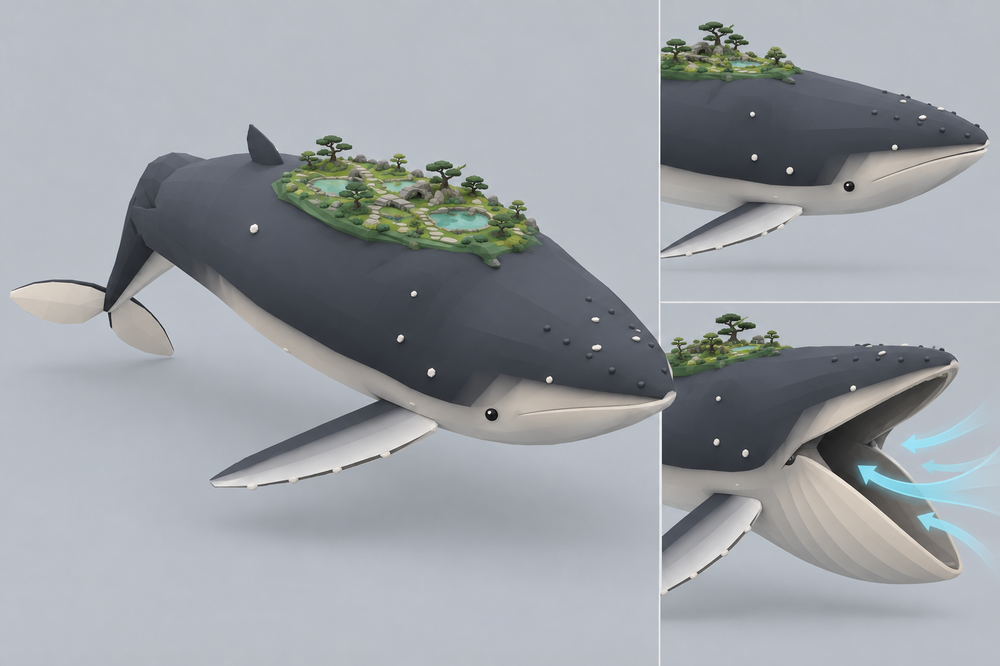
目标参考图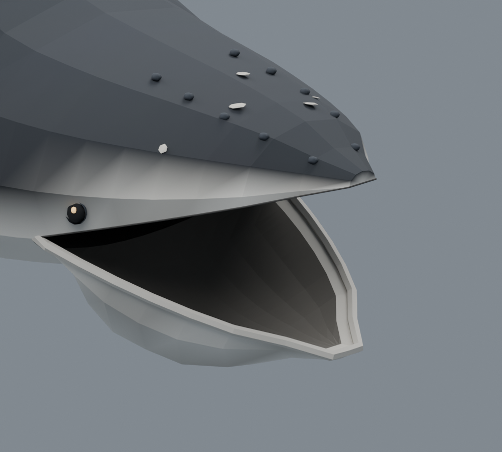
实际模型记录 · 请结合上方状态阅读苔庭古松
原枝干连接、根盘和层叠树冠已优化，单树三档模型进入 Godot 资产目录。六庭25种原树的25份Blender、75份GLB已完成检查；125个原可见网格逐棵匹配实际位置。最终五页对照已完成；25棵LOD0已接原位置并通过近远GPU核对。已补连续岛缘承托，425个根盘采样全命中；待机整体提高约0.553米避免海水淹没，升鲲恢复原设置。地面折面与根际过渡仍需打磨，没有自动LOD或新增导航。
 目标参考图实际模型记录 · 请结合上方状态阅读
目标参考图实际模型记录 · 请结合上方状态阅读展开25棵原树与优化模型对照（五页）
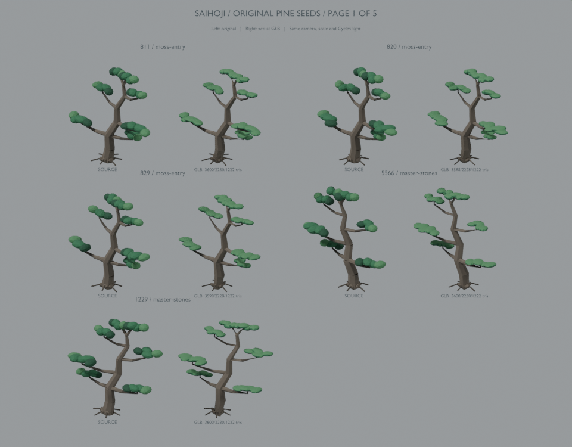
第1页 · 左原作 / 右实际GLB第2页 · 左原作 / 右实际GLB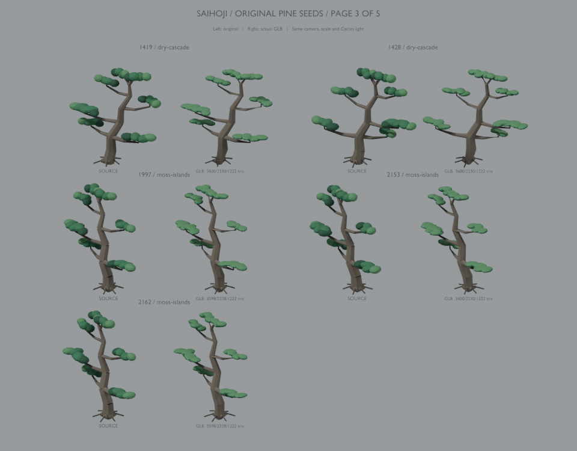
第3页 · 左原作 / 右实际GLB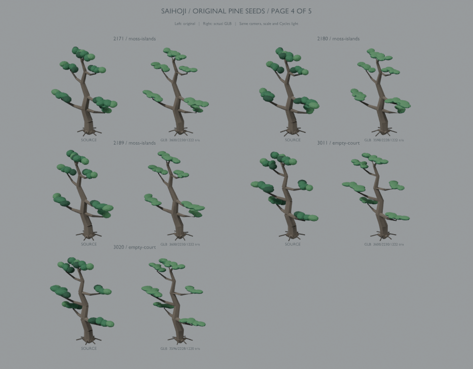
第4页 · 左原作 / 右实际GLB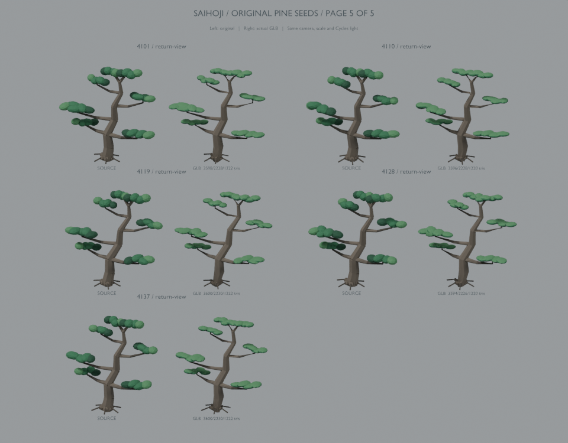
第5页 · 左原作 / 右实际GLB莫比斯重甲兵
Blender 关节、握柄与肩炮支架候选已完成，161 帧保存姿态检查通过，真实 GLB 材质回读通过。已在 Godot 战斗候选替换；移动仍缺完整行走步态，不能把保存姿态当作全套动作完成。 本轮配色已按目标图调整并接入Godot：深炭蓝灰装甲与灰褐护板/肩炮；已有真实出舱画面。 网页8931已接入新版几何与配色，27名重甲/3艘运兵艇加载检查通过。坡道与岸边路径已接实际地形和树石避让；诊断运行21人离艇、21人回舱、0超时兜底。完整战斗区域避障、自然触发与伤亡/紧急撤离仍待验。
 目标参考图
目标参考图 实际模型记录 · 请结合上方状态阅读
实际模型记录 · 请结合上方状态阅读查看目标图、配色前后与Godot实际出舱画面 · 网页接入记录
莫比斯吸食飞艇
Blender 采集口、支架与驾驶舱候选已完成并实际 GLB 回读。67 个原节点及动画引用保留，已在 Godot 五机编队接入新视觉，保留原运动根并接尾焰脉动；实际画面继续核对。
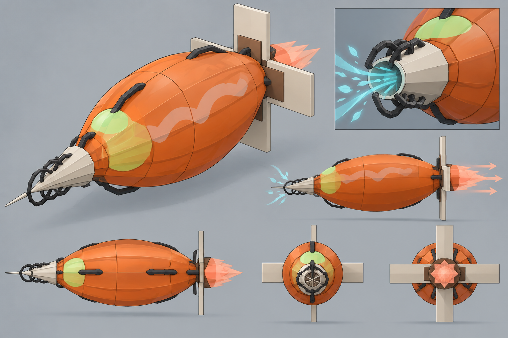
目标参考图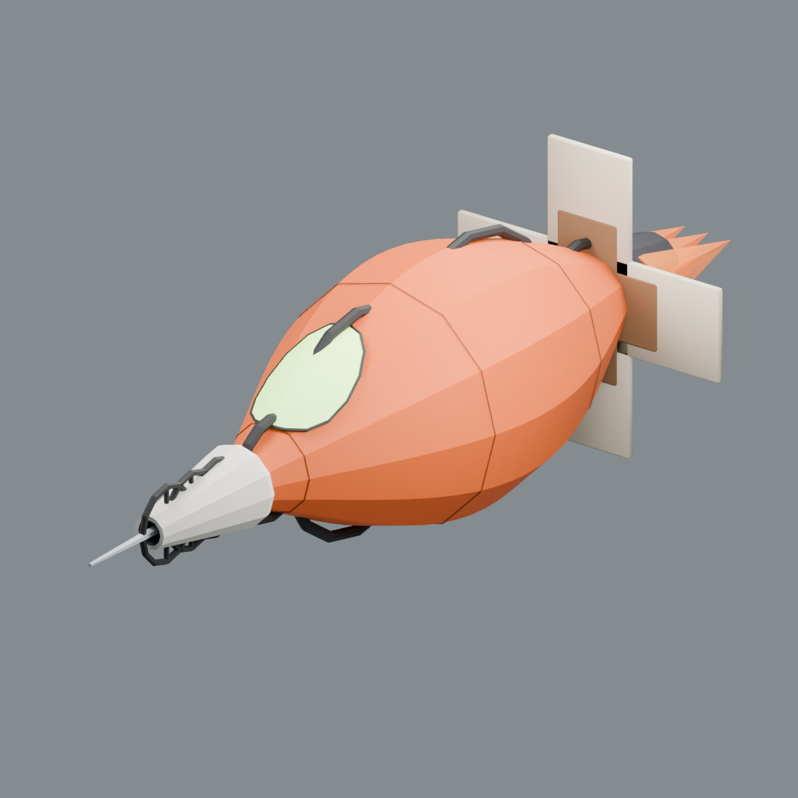
实际模型记录 · 请结合上方状态阅读SOCCO 运兵艇
Blender 货舱、坡道和七席新重甲候选已完成，已导入 Godot 资源目录。已在实际战场完成逐座出舱和幸存者回艇；整舱底/全坡道的地形穿入已修。完整行走步态仍待补。 本轮配色已按目标图调整并接入Godot：珊瑚砖红上壳、暖象牙下舱、深棕底座和木坡道；已有真实出舱画面。 网页8931已接入新版几何与配色，27名重甲/3艘运兵艇加载检查通过。坡道与岸边路径已接实际地形和树石避让；诊断运行21人离艇、21人回舱、0超时兜底。完整战斗区域避障、自然触发与伤亡/紧急撤离仍待验。
 目标参考图
目标参考图 实际模型记录 · 请结合上方状态阅读
实际模型记录 · 请结合上方状态阅读查看目标图、配色前后与Godot实际出舱画面 · 网页接入记录
传统战船 · 26 桨手
已按主透视目标完成两轮Blender迭代：双眼移到卷曲高端，船壳、甲板与上层平台两端收尖。v3发现眼穿壳与旧封口接触，v4已修；301保存帧的新壳体及划桨检查通过，450登船接面采样无缺口。保留26原桨手与动作；尚未正式战場回接或完成25人调度。
 目标参考图
目标参考图 实际模型记录 · 请结合上方状态阅读
实际模型记录 · 请结合上方状态阅读查看目标图与两轮实际模型对照 · 本轮验证范围
GatePod 护航艇
已归并为一种共用护航艇，以pod-41-7为母版；三艘战场实例共用模型和动作数据，保留各自航线、比例与双索降连接。旧版仅作历史归档。已进入真实 Godot 战场并连接两名重甲的实际索降；斜绳端点已修正，完整身体扫掠仍待验。
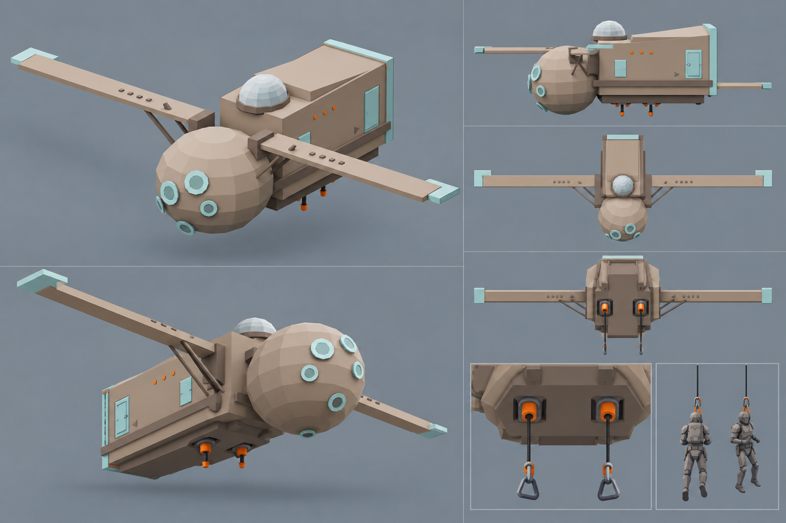
目标参考图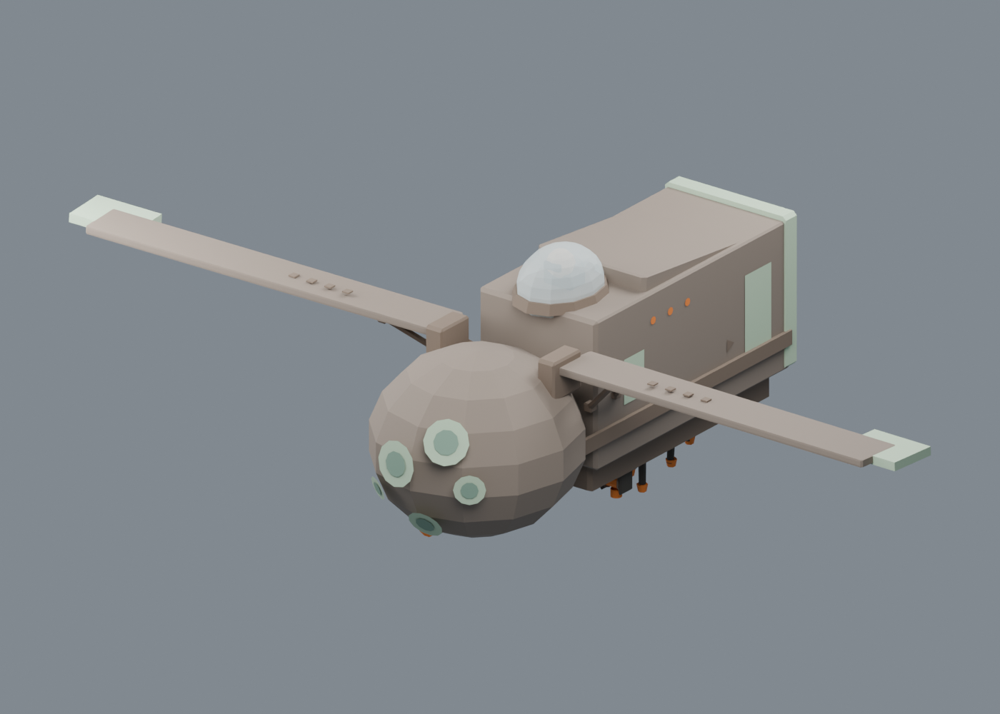
实际模型记录 · 请结合上方状态阅读查看共用护航艇模型
pod-41-7